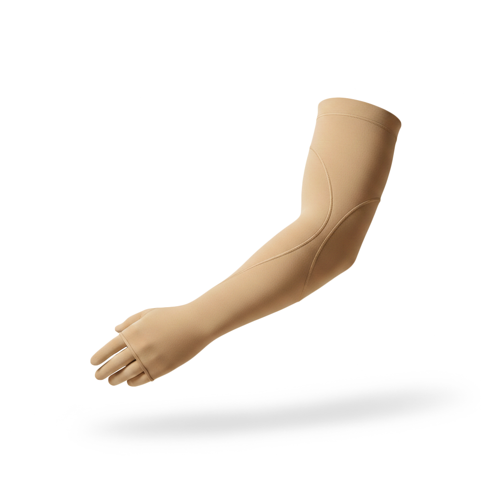
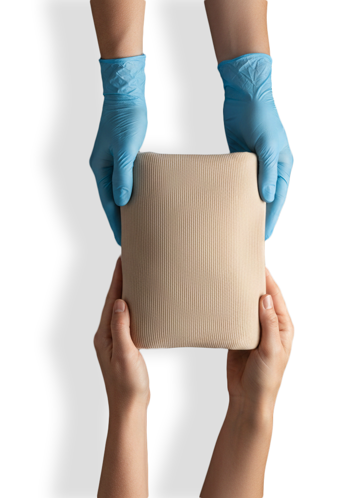
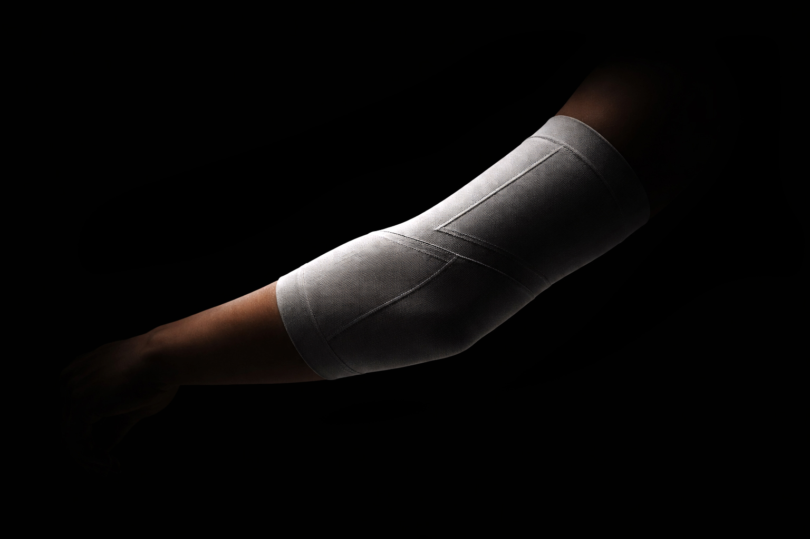

Custom compression garments designed to support healing and long-term recovery after burn injury.

Each garment is precisely measured and manufactured to support healing, improve comfort, and reduce hypertrophic scarring during recovery.
Krysalis garments are developed in collaboration with burn centers and clinicians to deliver precision, comfort, and measurable healing outcomes.

Precision engineering meets medical expertise to deliver compression therapy designed for real recovery.

Learn more about our technology, clinical process, and impact.